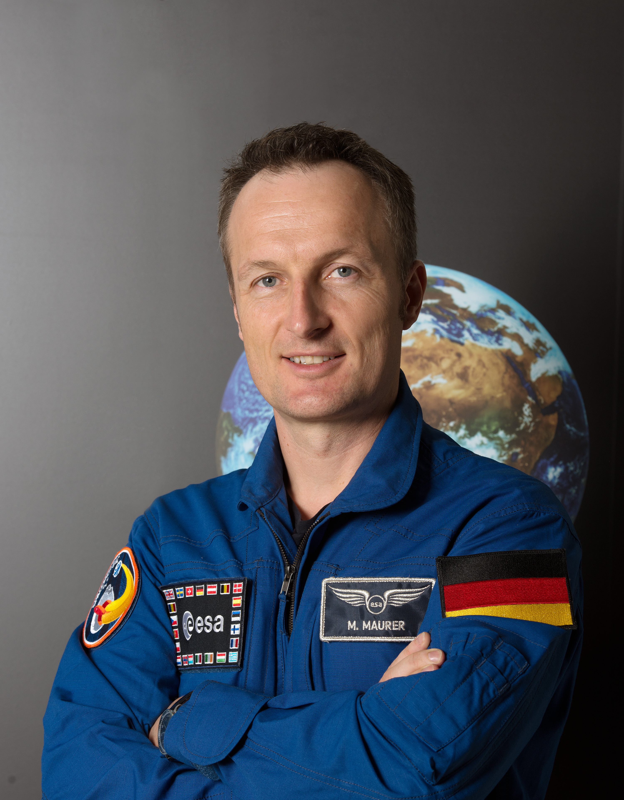
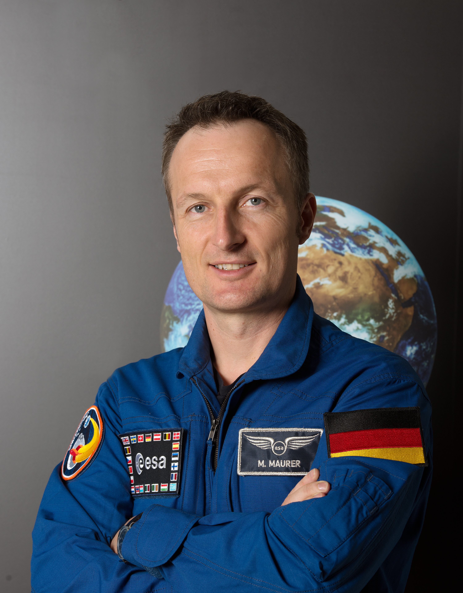
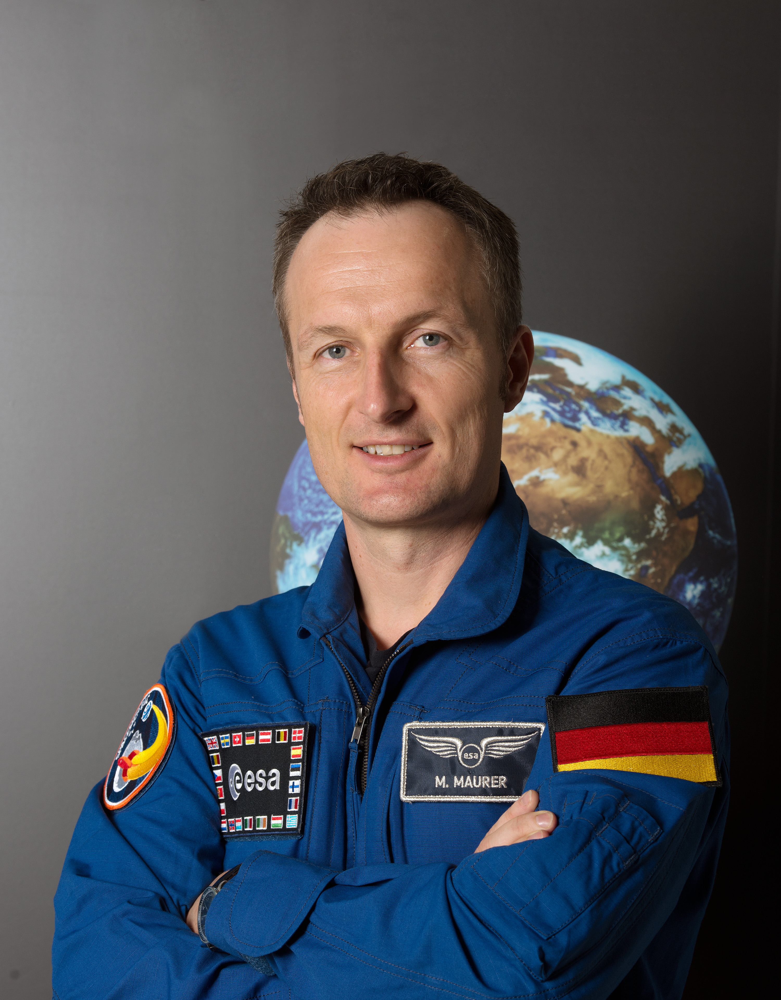

Deutschland hat eine lange Tradition in der Raumfahrt und hat seit den 1980er Jahren auch eigene Astronauten ausgebildet und ins All geschickt.
Ulf Merbold war der erste deutsche Astronaut, der ins Weltall flog. Er führte seine Mission im November 1983 im Rahmen des Space Shuttle-Programms der NASA durch. Merbolds Mission STS-9 an Bord des Space Shuttle Columbia trug dazu bei, die Zusammenarbeit zwischen Deutschland und den USA im Bereich der Weltraumforschung zu stärken. Mit dieser Mission eröffnete sich für Deutschland und die europäische Raumfahrt ein neues Kapitel. Merbolds Pionierleistung war ein Meilenstein für die deutsche Raumfahrtindustrie und legte den Grundstein für viele weitere Missionen deutscher Astronauten im All.
Ein weiterer bekannter deutscher Astronaut ist Thomas Reiter, der 1992 bei der Europäischen Raumfahrtagentur ESA als Astronaut ausgewählt wurde. Reiter flog insgesamt dreimal ins All, davon zweimal zur russischen Raumstation Mir und einmal zur Internationalen Raumstation (ISS). Zusammen verbrachte er 350 Tage im All und war somit der deutsche Astronaut mit der längsten Weltraum-Erfahrung.
Ein weiterer deutscher Astronaut ist Alexander Gerst, der 2014 und 2018 zur ISS flog. Gerst war als Geophysiker und Vulkanologe tätig und führte während seiner Missionen auf der ISS zahlreiche wissenschaftliche Experimente durch. Er ist auch bekannt für seine Beiträge in den sozialen Medien, wo er regelmäßig Bilder und Videos aus dem All postete und damit eine große Fangemeinde aufgebaut hat.
Die deutsche Raumfahrtagentur, das Deutschen Zentrum für Luft- und Raumfahrt (DLR), hat derzeit auch weitere Astronauten in der Ausbildung. Unter ihnen sind Matthias Maurer, der voraussichtlich 2021 zur ISS fliegen wird, und Suzanna Randall, die als eine der wenigen Frauen in Europa eine Ausbildung zur Astronautin absolviert hat.
